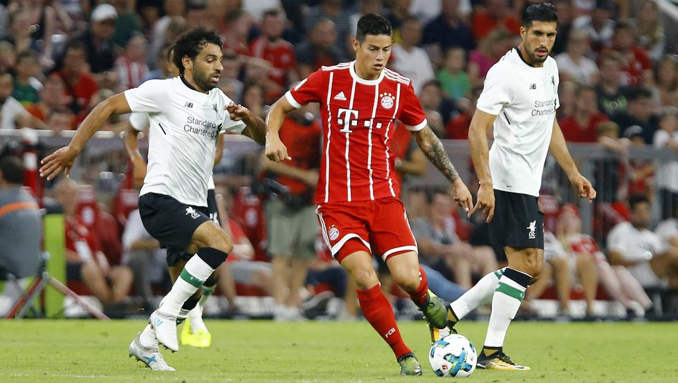
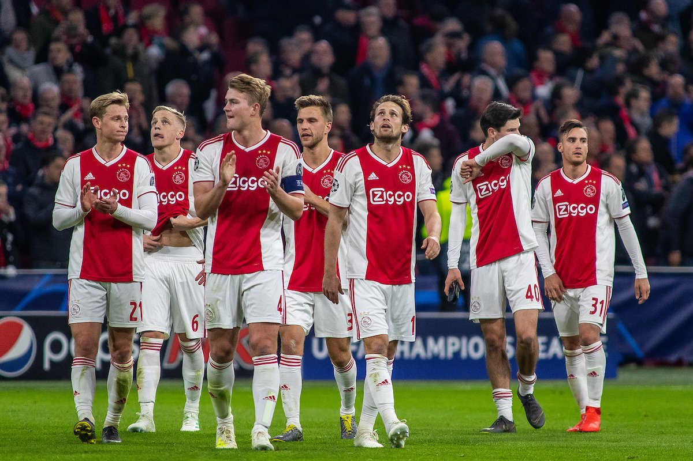
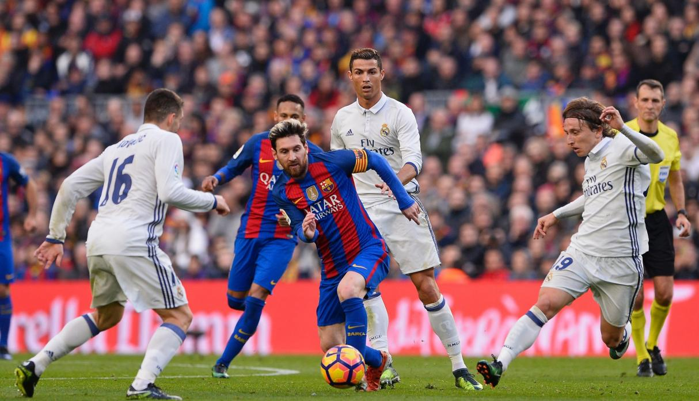

Mundo Futbol
Inicio
La Liga de Campeones de la UEFA 2018-19 (en inglés: UEFA Champions League) es la 64.ª edición de la competición y la 27.ª temporada desde que se renombró la Copa de Campeones de Europa a la Liga de Campeones de la UEFA. El campeón jugará la Supercopa de Europa 2019 contra el campeón de la Liga Europa de la UEFA 2018-19.

El Wanda Metropolitano, con capacidad para 68.000 espectadores y que alberga los partidos del Club Atlético de Madrid, fue el elegido para acoger la final del torneo.1 Es el cuarto estadio español en albergar una final de la máxima competición continental y el segundo en la ciudad de Madrid, tras el Estadio Santiago Bernabéu (1957, 1969, 1980 y 2010), Estadio Ramón Sánchez Pizjuán (1986) y Camp Nou (1989 y 1999). La capital de España se convertirá así en la segunda ciudad en celebrar cinco o más finales de la competición tras Londres y la quinta en celebrar este evento en estadios distintos junto a Ámsterdam, París, Múnich y Lisboa.

El Real Madrid el campeón defensor, después de haber ganado el título por tres temporadas consecutivas quedó eliminado en esta edición por el Ajax Ámsterdam en octavos de final después de haber perdido 1-4 en su casa, haciendo inútil el 1-2 logrado en la ida, terminando con un registro de 4 títulos en cinco años y 8 semifinales consecutivas.
